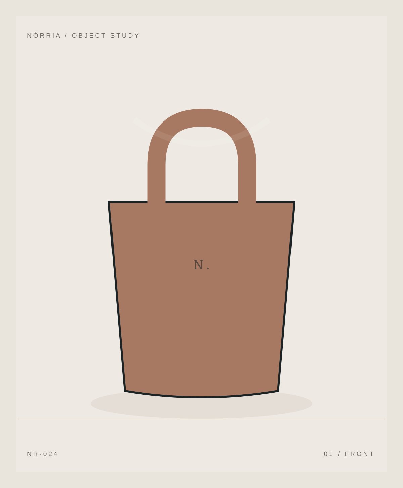
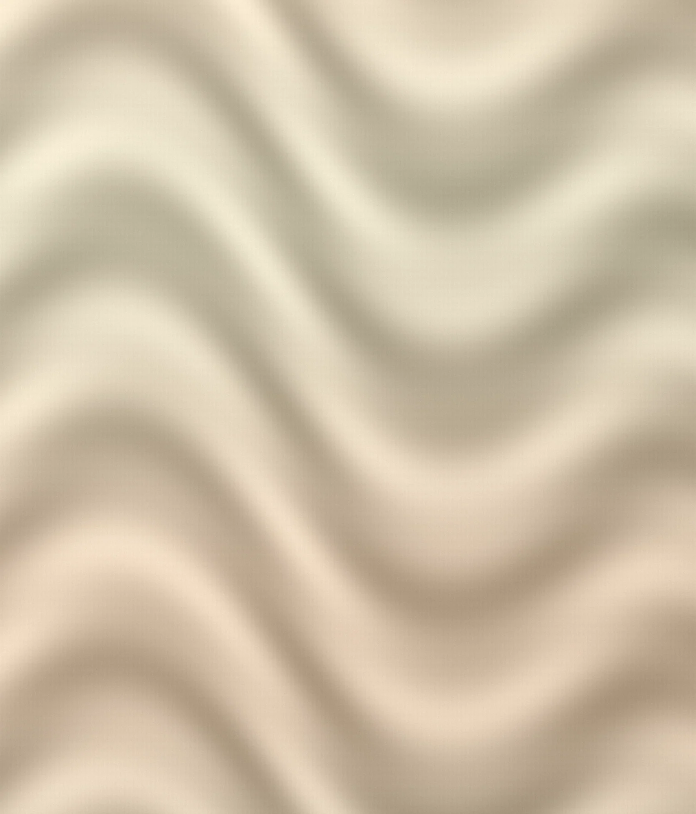

Horizon Tote
BRL 319.00
Concept vector illustrations; not photos or physical garments.

Demo price: BRL 289.00
A conceptual garment exploring proportion, texture and everyday use. Materials, specifications and prices are illustrative.
P / M / G / GG are demonstration sizes. No garment has been manufactured or measured.
Structured cotton. A conceptual garment exploring proportion, texture and everyday use. Materials, specifications and prices are illustrative.
Concept product with no inventory; not available for real purchase.
A demonstration interface only, with no real timelines, shipping or commercial policy.
P / M / G / GG are demonstration sizes. No garment has been manufactured or measured.

BRL 319.00